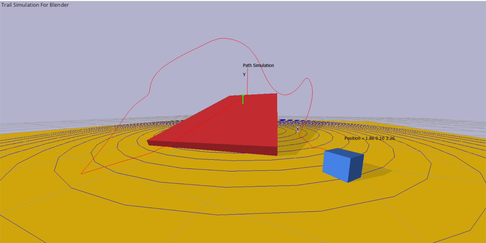
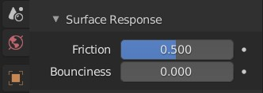
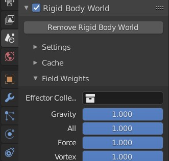
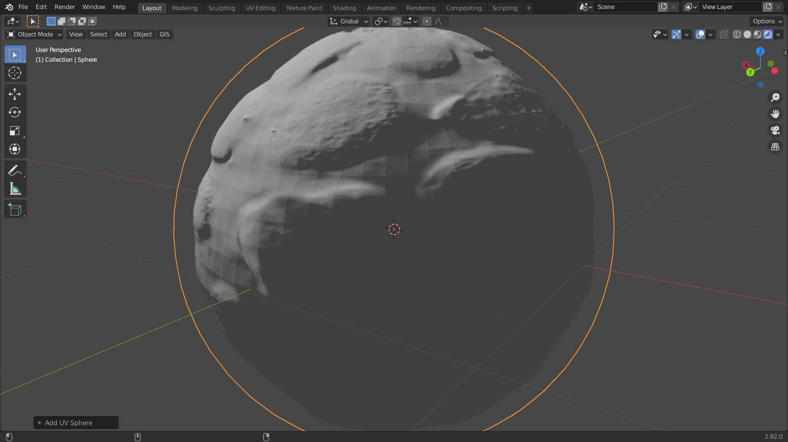
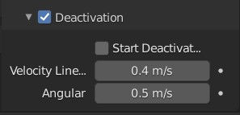

Gali Ravi Praveen
Gmail: grpnpraveen@gmail.com
@grpnpraveen on devtalk,developer.blender.org,Blender.Community and blender.chat
Github: https://github.com/grpnpraveen
Gumroad: Gali_Ravi_Praveen
The goal of this project is to make Blender viewport more informative concerning physics simulations. This project primarily focuses on the Rigid body simulation(similar to cloth simulation), which motivates to improve/develop displaying simulation data for other simulations in future. At present, in Blender, we can't detect the way the Rigid body behaves when it is in a complicated position. If we want to know its behaviour, then we need to bake the data or need to test by playing the animation, which is slow while having many vertices or objects. But by displaying the simulation data of the Rigid body in the viewport, we can know its behaviour without delay.
There are majorly three benefits concerning Time, Memory and GPU or CPU performance.
⁍ Baking cache for the desired simulation without too many trails can save time, this can be achieved by simply displaying simulation data.
⁍ If there is no simulation data displayed, then the user needs to play or bake the animation to get the desired simulation which results in more usage of RAM and HardDisk.
⁍ Too many trials with the simulation will increase the number of CPU or GPU cycles per second, which affects the performance of the system. We can minimize this by displaying simulation data in the viewport.
⁍ A UI panel under Rigid body Physics Properties in the Properties Menu to control the visualization.
⁍ Different types of visualization data of Rigid body in the viewport, like Path of the Rigid body along with collision spots, Friction, Gravity, Normal Force, Velocity, Angular Velocity and Collision Margin.
⁍ If possible, similar UI and visualization for the Cloth simulation in this GSOC project. If not, I will continue this even after the GSOC period.
⁍ Documentation about all these features, describing briefly for the Users, will be documented to understand how they work(in simple words).
This project requires basic knowledge of Rigid body Dynamics to understand the behaviour of the Rigid body while the forces acting on it. Some of which plays a crucial role are Gravity, Friction and other external forces in the viewport.
Every Object inside Blender has its origin that is the centre of that object. Assuming this origin as the main object, its travel path can be displayed in the viewport using the Rigid body data and GLSL. In addition to this, collision spots where the body will collide with other Rigid body can be highlighted along this path.
I made a demo file of the path simulation of the Rigidbody, using Bullet, C++ and OpenGL Link_Here
If a Rigid body is in contact with another Rigid body then there will be an opposing force that acts in the opposite direction of its motion, called Frictional Force. As friction is already an attribute to the Rigid body properties in blender, this data will be helpful to draw a vector showing Frictional Force(both Static and Kinetic) with the direction and its magnitude in the viewport.
Gravity is the main field of force that plays a key role in Rigid body Dynamics. This force is also an attribute in the Rigid body World properties under Field Weights. Using this data and mass of the Rigid body, Gravitational force can be calculated and displayed in the viewport along with the direction.
If we know the g-value(gravitational constant) and the mass of the body then we can calculate the Normal Force. In some rare cases, if the object is inclined on the wedge-like thing then need to calculate the angle of inclination and need to apply some trigonometric laws to find both Normal and the gravitational force and their directions.
To collide two objects in Blender there is an important attribute, which decides the collision point between them. The collision margin data is under sensitivity in Rigid body settings called Collision Margin. By using this data a virtual border can be visualized to make the user understand where the actual collision happens between them.
The main vector property of any Rigid body, while it is in motion (translational or rotational), is its velocity. Velocity can be visualized along with the direction in the viewport using the velocity data from the velocity attribute under the deactivation section in Rigid body settings, which calculates the Rigid body's velocity in the background or directly we can get the Rigidbody velocity and angular velocity from the Bullet Physics API by using the methods "getLinearvelocity" and "getAngularvelocity".
As I already have approximately six months of bonding with Blender-dev, I can utilize this period to gather some more ideas from Blender Community using Blender.Community and other social media platforms. The week's work starts with making a UI panel named Viewport Display, under Rigid body settings in Physics Properties with only option Collision Margin, which displays the collision boundary around mesh using Collision Margin value under Sensitivity properties. Doing this work will let me know the entire pipeline (Python, RNA, C++ and GLSL). This week's work also involves writing a shader code to visualize the boundary around the mesh/object representing the Collision Margin.
Add an option to select the display colour of the boundary, representing Collision Margin, around the mesh and collect the data of the centre of the rigid body along with collision spots and displaying this data in the viewport. Also, an option(bool type) under viewport Display as Path(or any suggested name) to enable or disable.
If any of the previous tasks remained, this week acts as a buffer. If not, then the work continues.
Fetching the values of the Gravitational constant and mass of the rigid body to calculate the weight can help to calculate both Gravitational and Normal Force depending on the contact of the other object. For instance, if the object is resting on the wedge-like object then the Normal force will be "mg" multiplied by "cos(theta)" and the direction is perpendicular to the wedge. Adding two more options in UI, to display the Gravitational and Normal Force data along with direction and magnitude.
First Evaluation will happen this week. Any corrections required then, I will work on them. If not, I will be working on the friction part.
Collecting required data from objects like friction value can help to calculate both static and kinetic friction values. GLSL code to display the data in the viewport. Adding options to UI to select the direction and magnitude.
Data need to be collected from the deactivation section under Dynamics inside Rigid body properties where both linear and angular velocity were calculated. Using this data GLSL program will be written to display the direction and magnitude of the velocity of the object.
The ideas which were suggested by the community will be implemented this week. If not, adding a similar UI for Cloth Simulation.
I am Gali Ravi Praveen, a sophomore undergraduate student majoring in computer science and engineering at BML Munjal University, India. I was introduced to C when I was in my first year of engineering and then gradually learned other languages like C++, C#, Python, Java, Js, PHP and recently OpenGL. As a vice-president of the Robotis club in the University, my knowledge of C and C++ programming has increased and I am very proficient in these languages. I did some games using C, C++ and a software project using Python(github_link). Apart from studies, I am a big lover of movies and series especially animated ones like Ratatouille, Big Hero 6, Kungfu Panda, Insideout and others. I am familiar with blender for 3 years and as blender-dev for approximately 6 months. I also have some exposure to Blender Python API which I made two addons for Blender. One is a temporary solution for the grease pencil shadows issue(T85183) and the other(T84348)is an add-on that helps to attach texture maps to the object along with an extra feature that generates real-time displacement in Eevee similar to cycles. I made several tutorials and videos of blender on youtube which helps others to understand modelling and animation. Using Blender and Unity, I made some 2D games one of which Stroop_play.